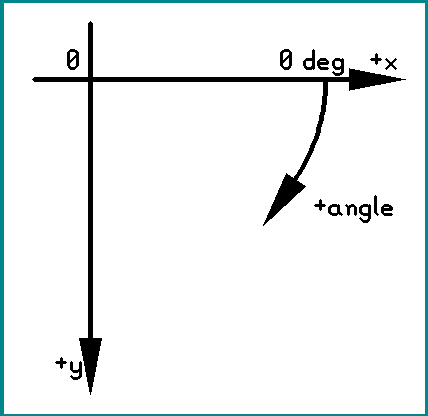
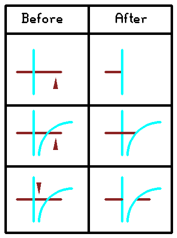
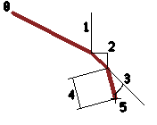

The purpose of ddraft is to provide actions and GUI tools to help users drawing precise 2d drafts. Many of the features in ddraft are very similar to those found in standard 2d CAD packages.
Ddraft uses the following coordinate system (when looked from the top of the board):

Coordinate and/or angle constraints can be applied on line drawing (when all-direction lines turned on) and move operation. Executing the constraint() action without arguments opens a dialog box with the settings. The same settings are accessible from the command line, using the constraint() action with arguments:
| action syntax | description |
|---|---|
| constraint(line_angle, ang1, ang2, ...) | permit drawing lines only at specific angles |
| constraint(line_angle_mod, ang) | permit drawing lines only at angles which are integer multiplies of ang |
| constraint(line_length, len1, len2, ...) | draw lines with length matching any length on the list |
| constraint(line_length_mod, len) | draw lines with length matching any integer multiply of the len |
| constraint(move_angle, ang1, ang2, ...) | permit moving objects only at specific angles |
| constraint(move_angle_mod, ang) | permit moving objects only at angles which are integer multiplies of ang |
| constraint(move_length, len1, len2, ...) | move objects at a distance matching any length on the list |
| constraint(move_length_mod, len) | move objects at a distance matching an integer multiply of the len |
| constraint(reset) | reset all constraints |
Length can include unit (on the GUI: without space). Multiple constraints can be set in the same time. Constraints are reset upon explicit user request or pcb-rnd restart.
For line drawing, it is possible to get the angle constraints calculated using the line start point and an existing object:
| action syntax | description |
|---|---|
| perp() | click on a line; set line_angle perpendicular to that line |
| paral() | click on a line; set line_angle parallel to that line |
| tang() | click on an arc; set line_angle tangential to the circle of the arc |
For already existing, intersecting objects (lines and arcs), the user may define cutting edges that can manipulate target objects they intersect. There are two actions for cutting edges: trim() and split(). The first argument of these actions is:
The objects participating may be on different layers. All calculation use the centerline of the objects.
In a trim operation the target objects are cut at the intersection point, excess parts (at the click) removed. If there are multiple cutting edges, the shortest possible section is removed. The below examples are generated with trim(selected), clicking on the horizontal line at the small triangle mark.

In a split operation target objects are split into multiple section wherever they cross a cutting edge. A split means a single line object becomes multiple line objects or a single arc object becomes multiple arc objects.
The above features are pcb-rnd actions designed to fit in the action framework, to work together with the original pcb-rnd drawing tools, like the line tool. An alternative to that is using the new, ddraft command line interpreter, which offers a different syntax, optimized for drafting.
There are two ways to use the ddraft command line interpreter:
When used as a CLI mode, mouse clicks on the drawing will also edit the command line at the cursor. The generic rule is that a click will replace an already entered numerical value or inserts a missing numerical value, but all instruction keywords are typed on the keyboard. Instructions can be abbreviated; the shortest form accepted is the shortest prefix that is unique among the instruction keywords. For example "li" means "line" and "rel" or even "re" works for "relative".
The first instruction is the drawing command, which is one of the following.
| command | syntax summary | purpose |
|---|---|---|
| line | line [from] coord to coord | draw line segments on the current layer, using the current routing style |
Parts enclosed in [] are optional. A coord description is a sequence of absolute and relative coordinates:
| keyword | next instruction (argument) | example | purpose |
|---|---|---|---|
| absolute | xcoord,ycoord | abs 1mm,15mm | an absolute coordinate; units are optional; must not contain space |
| * | *1mm,15mm | ||
| 1mm,15mm | |||
| relative | xcoord,ycoord | rel 1mm,15mm | a relative coordinate measured from the absolute coord specified so far; units are optional; must not contain space |
| @ | @1mm,15mm | ||
| angle | degree | ang 15 | an absolute angle in degrees; always measured from the X axis; should be used together with length |
| < | <15 | ||
| relative angle | degree | rel ang 15 | a relative angle in degrees; always measured from the X axis; should be used together with length |
| @< | @<15 | ||
| length | coord | len 3.1mm | length or distance to move from the previous coordinate; always relative; used together with an angle |
| ~ | ~3.1mm |
For example the sequence 5mm,100mil relative 1mm,1mm relative angle 30 length 2mm means:
Below the same steps are demonstrated; dark red lines demonstrate the moves, thin black lines show how they are calculated. The result is a single coordinate marked with a thin black cross at step 5. The sequence itself does not draw anything, the drawing merely demonstrates how the steps are executed in memory.

Equivalent alternative forms for the same sequence:
5mm,100mil rel 1mm,1mm rel ang 30 len 2mm 5mm,100mil @1mm,1mm @<30~2mm 5,100mil @1,1 @<30~2
The last one assumes unit is set to mm.